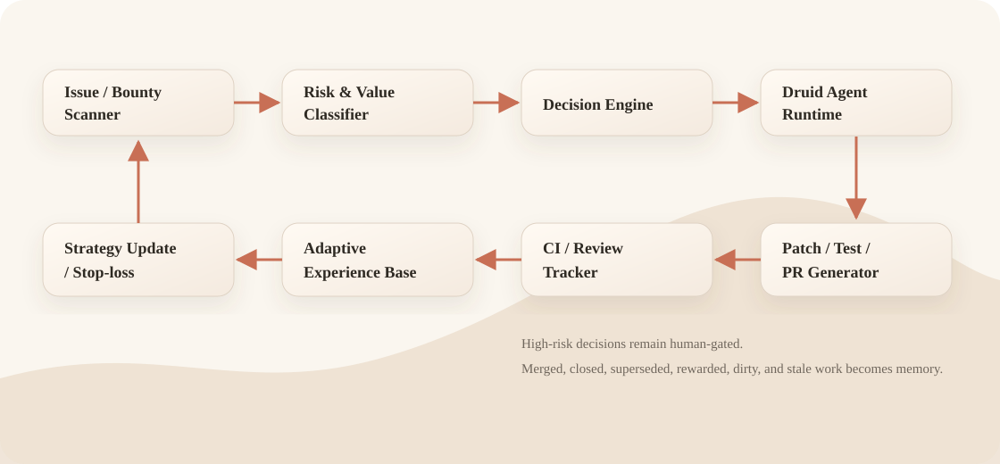

Agent framework builder
Connects repositories, issues, CI, tests, review rules, risk policy, and adaptive memory into one operating loop.
I build frameworks that make AI coding tools operate reliably inside real repositories.
Druid is not the product I want to be hired to manually operate. Druid is proof that I can design agentic engineering systems that keep discovering, prioritizing, implementing, testing, reviewing, and learning with low ongoing supervision once the framework is built.
Connects repositories, issues, CI, tests, review rules, risk policy, and adaptive memory into one operating loop.
Finds vulnerability-shaped engineering risks: auth boundaries, public exposure, XSS/CORS, races, exact-once payout failures, and ledger drift.
Turns one-off prompting into a repeatable, auditable system for repo maintenance and review-loop execution.
Druid is a closed loop, not a single bot. Every merged, closed, superseded, dirty, stale, or rewarded PR becomes a strategy signal.

Druid generated a 36-PR test-backed review queue across payout exact-once semantics, bridge terminal-state integrity, UTXO transaction atomicity, governance accounting, bounty attribution, browser/security boundaries, and operational reliability hardening.
| Surface | Representative PRs | Proof value |
|---|---|---|
| Payout exact-once / terminal status | #7385, #7357, #7353 | Missing-row handling, terminal-status protection, and repeated-claim prevention. |
| Bridge terminal integrity | #7363, #7343, #7316 | Bridge state visibility, terminal race protection, and operator-only flow clarity. |
| UTXO / transaction atomicity | #7350, #7339, #7335 | Nonce serialization, ownership invariants, conservation checks, and rollback edges. |
| Browser/security boundaries | #7382, #7379, #7377 | Legacy admin gates, dashboard escaping, Socket.IO CORS, and public status redaction. |
Open PRs are review-queue evidence, not merged or accepted claims. Counts should be re-audited before public launches.